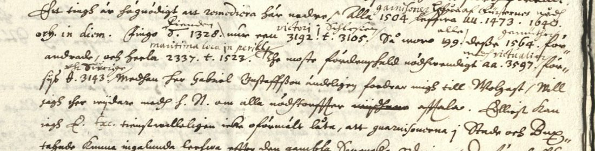

At a glanceNot solved · surveyed only
- The letters
- Four Swedish letters to Axel Oxenstierna (“Höghwälborne Herre, gunstige patron”), dated 8/18 June and 27 June 1633 on the leaves. The writer is not yet identified.
- Where
- Riksarkivet, Stockholm, Oxenstierna collection E 708; DECODE R4338–R4341, “Oxenstiernska_samlingen_E_708-1” to “-4”, dated 1646, with no decipherment recorded. Formerly part of catalogue item 207.
- The cipher
- Two-digit letter codes, four-digit codes for names and places, and letter pairs (rr, mm, aa, tt). Some groups have their meaning written above them in a hand of the time. Whether all four letters use one code is not known.
- How it was tried
- Not yet: the letters were opened on 21 September 2026, dated and set aside.
- Still open
- Everything: the codes, the glosses, the writer, and a key the archive’s key list names for 1633 but which was not found among the key records fetched.
These letters were filed on this site until 14 October 2026 with ten other Riksarkivet records of catalogue item 207. They are different ciphers, each with its own page: the archbishop of Bremen’s letters of 1631 (deciphered), R4282 (deciphered by George Lasry), R4284, R4306 and Rusdorff’s letters of 1628.
01The letters

The first letter, headed “8/18 Juni 1633” and foliated 20, seems from its clear words to deal with money, contributions and garrisons (Berlin, Hamburg and Wolgast are named in clear); it has not been studied closely. The code numbers stand mostly for names and places, and the glosses of the time cover part of them. DECODE’s date of 1646 is wrong for these leaves.
The archive’s list of keys names one for “Oxenstierna and Lars Nilsson Tungel (1633)”. Tungel was a Swedish diplomat in Germany in these years and is a candidate for the writer, but that is not checked, and the key was not among the seventy key records fetched from the same boxes.
02What remains
- The code groups of all four letters. They have not been transcribed.
- To do: transcribe the letters with their glosses and rebuild the code from the glossed groups; identify the writer; search the printed correspondence (Rikskanslern Axel Oxenstiernas skrifter och brefvexling, series II).
03Sources
Notes: targets/oxenstierna1633/.